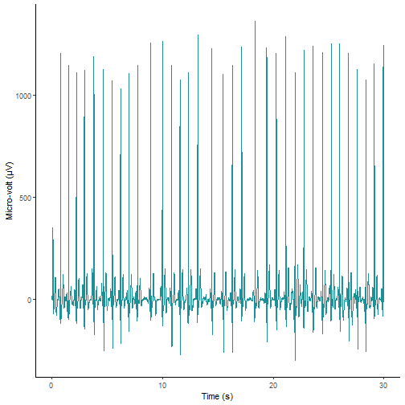

on
Personal ECGs with the Withings Move ECG
Last week I got hold of the Withings Move ECG, an analog smart watch that can record electrocardiograms (ECGs). While recording ECGs has been available on the Apple Watches, Withings is the only company that has easily opened up the raw ECG data through their API. There are rumors that Apple will allow 3rd party developers to read the raw ECG data in iOS 14. Withings on the other hand has included raw ECG data in their API since October 2019.
For fun I wanted to see how easy it is to record an ECG, and then get hold of the data for further exploration. Recording an ECG on the Move ECG is very simple, and takes about 30 seconds. The watch syncs the ECG with the companion Withings Health Mate app on my phone, which then uploads the data to your account and makes it available through the API. When you have registered as a Withings API partner you can start querying their API.
Since I am partial to the R programming
language, I did some searching on Github, and found
Granville Matheson’s rwithings
R package which I could use to download the data. I had some initial issues with
the package, probably because the API had changed recently, but since the
package
is open-source I could clone the repository and fix them.
Granville even merged my PRs within hours, so a shout out to him for that! Also,
you should check out his
post on the physiological response to his PhD defence. It shows
another example of using data from the Withings API.
When you have installed the rwithings
R package, it is very simple to get the data. First we load the required packages.
library(rwithings)
library(dplyr)
library(ggplot2)
library(kableExtra)
Before we can start getting data we need to authenticate with the API.
client_id <- "asdf1234"
client_secret <- "4321fdsa"
token <- withings_auth(client_id, client_secret)
We can then use this token to get a list of ECGs that were collected last week.
I’ll trim away the deviceid
of my watch, just because I’m not sure if it’s sensitive information or not.
As a sidenote, I would love if Withings could document their API better with
regards to the data that comes out. There is no information in the API docs
about what the data in the different columns actually mean.
response = getheartlist(token, "2020-08-17", "2020-08-23")
ecgs = response$body$series
ecgs = ecgs %>%
mutate(deviceid = "")
kable(ecgs, format="markdown")
| deviceid | model | heart_rate | timestamp | ecg.signalid | ecg.afib |
|---|---|---|---|---|---|
| 91 | 73 | 2020-08-21 09:23:45 | 6708651 | 0 | |
| 91 | 61 | 2020-08-19 12:35:46 | 6650354 | 0 | |
| 91 | 54 | 2020-08-19 10:03:29 | 6647254 | 0 | |
| 91 | 96 | 2020-08-19 07:13:05 | 6641527 | 0 | |
| 91 | 58 | 2020-08-18 21:07:24 | 6631040 | 0 | |
| 91 | 55 | 2020-08-18 20:57:27 | 6630987 | 0 | |
| 91 | 62 | 2020-08-18 20:56:16 | 6630755 | 2 | |
| 91 | 61 | 2020-08-18 20:47:39 | 6630463 | 0 | |
| 91 | 65 | 2020-08-18 20:45:55 | 6630410 | 0 |
Looking at the data. I collected 9 ECGs. All but one were classified ecg.afib=0 which
I use the Health Mate app to infer means “No signs of atrial fibrillation”. There
is one recording with ecg.afib=2 which I had to look up in the app means that
the recording couldn’t be classified normal rythm or atrial fibrillation. This is
because I removed my hand from the watch when I did this recording.
In addition, we get my heart rates and timestamps when they were collected. Since
the Withings API provides little information on the output, I do not know what
Model=91 means, but I guess its the ID of the Move ECG watch.
Further I can get the raw micro-volt measurements from one of the recordings, and plot them.
signalid = ecgs[1,]$ecg.signalid
ecg = getheart(token, signalid)
df = tibble(mV = ecg$body$signal)
df = df %>%
mutate(id = row_number()) %>%
mutate(time = id/ecg$body$sampling_frequency)
ggplot(df, aes(x=time, y=mV)) +
geom_line(color = "#1c9099") +
theme_classic() +
xlab("Time (s)") +
ylab("Micro-volt (μV)")

This is pretty cool stuff. I would love to learn more about how we can classify these recordings, and maybe have a look at trends over time. I’m happy with how open the Withings API is, but it would benefit from more detailed documentation on the output data.